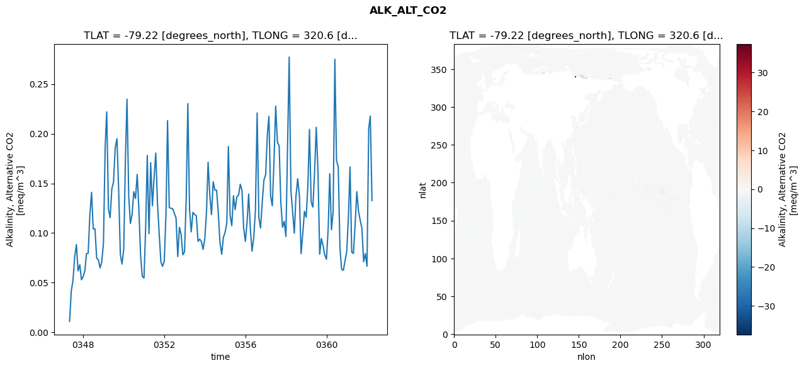
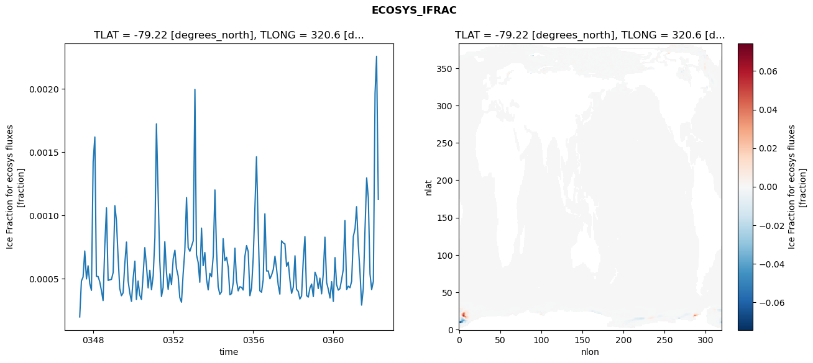
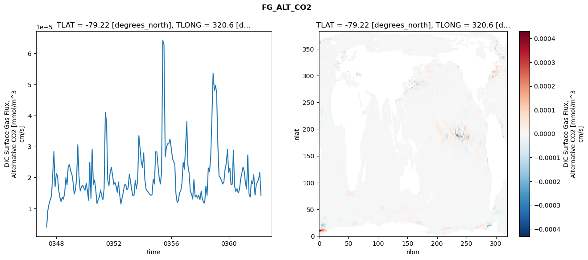
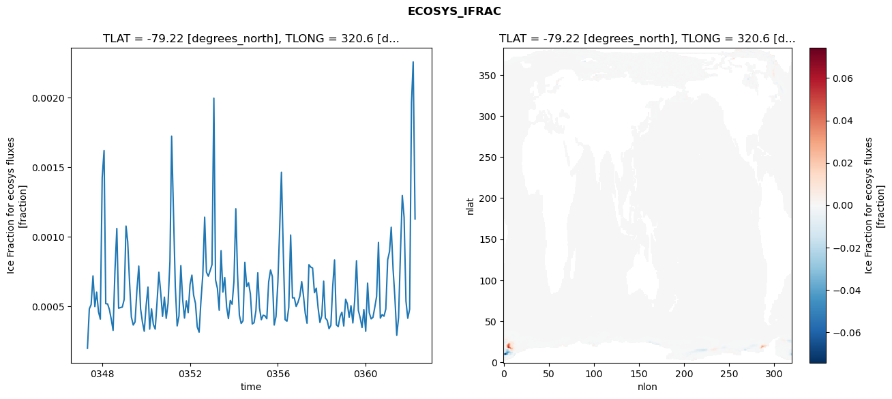
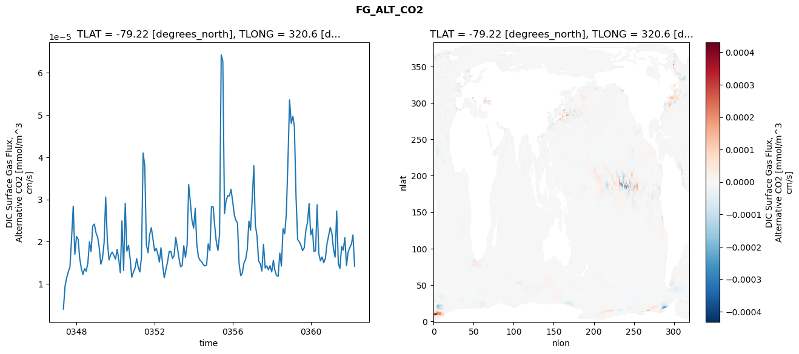
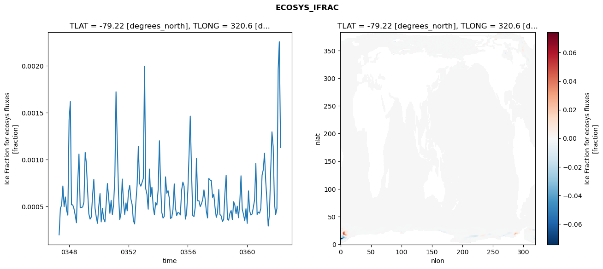
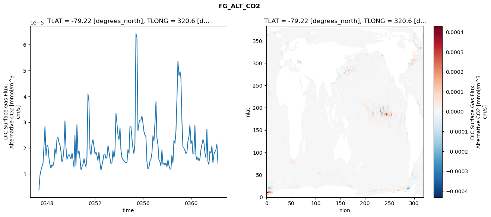

glb-dor_North_Atlantic_basin_005_1999-04-01_00021#
Simulation details#
Case: smyle.cdr-atlas-v0.glb-dor_North_Atlantic_basin_005_1999-04-01_00021.001
Basin: North_Atlantic_basin
Polygon: 5.0
Start date: 1999-04
Show code cell source Hide code cell source
import xarray as xr
import matplotlib.pyplot as plt
Show code cell source Hide code cell source
zarr_store = "/path/to/zarr/store"
# Parameters
zarr_store = "/global/cfs/projectdirs/m4746/Projects/Ocean-CDR-Atlas-v0/data/validation/smyle.cdr-atlas-v0.glb-dor_North_Atlantic_basin_005_1999-04-01_00021.001.validation.zarr"
Show code cell source Hide code cell source
%%time
ds_o = xr.open_zarr(zarr_store).compute()
ds_o
CPU times: user 701 ms, sys: 435 ms, total: 1.14 s
Wall time: 1.45 s
<xarray.Dataset> Size: 2MB
Dimensions: (nlat: 384, nlon: 320, time: 180)
Coordinates:
TLAT float64 8B -79.22
TLONG float64 8B 320.6
ULAT float64 8B -78.95
ULONG float64 8B 321.1
* time (time) object 1kB 0347-05-01 00:00:00 ... 0362-04-01 0...
z_t float32 4B 500.0
Dimensions without coordinates: nlat, nlon
Data variables:
ALK_ALT_CO2_diff (nlat, nlon) float32 492kB nan nan nan ... nan nan nan
ALK_ALT_CO2_rmse (time) float64 1kB 0.01114 0.04183 ... 0.2178 0.1327
DIC_ALT_CO2_diff (nlat, nlon) float32 492kB nan nan nan ... nan nan nan
DIC_ALT_CO2_rmse (time) float64 1kB 0.01616 0.05449 ... 0.2174 0.1589
ECOSYS_IFRAC_diff (nlat, nlon) float32 492kB nan nan nan ... nan nan nan
ECOSYS_IFRAC_rmse (time) float64 1kB 0.0001957 0.0004799 ... 0.001128
FG_ALT_CO2_diff (nlat, nlon) float32 492kB nan nan nan ... nan nan nan
FG_ALT_CO2_rmse (time) float64 1kB 4.024e-06 9.463e-06 ... 1.42e-05xarray.Dataset
- nlat: 384
- nlon: 320
- time: 180
- TLAT()float64-79.22
- long_name :
- array of t-grid latitudes
- units :
- degrees_north
array(-79.22052261)
- TLONG()float64320.6
- long_name :
- array of t-grid longitudes
- units :
- degrees_east
array(320.56250892)
- ULAT()float64-78.95
- long_name :
- array of u-grid latitudes
- units :
- degrees_north
array(-78.95289509)
- ULONG()float64321.1
- long_name :
- array of u-grid longitudes
- units :
- degrees_east
array(321.12500894)
- time(time)object0347-05-01 00:00:00 ... 0362-04-...
- bounds :
- time_bound
- long_name :
- time
array([cftime.DatetimeNoLeap(347, 5, 1, 0, 0, 0, 0, has_year_zero=True), cftime.DatetimeNoLeap(347, 6, 1, 0, 0, 0, 0, has_year_zero=True), cftime.DatetimeNoLeap(347, 7, 1, 0, 0, 0, 0, has_year_zero=True), cftime.DatetimeNoLeap(347, 8, 1, 0, 0, 0, 0, has_year_zero=True), cftime.DatetimeNoLeap(347, 9, 1, 0, 0, 0, 0, has_year_zero=True), cftime.DatetimeNoLeap(347, 10, 1, 0, 0, 0, 0, has_year_zero=True), cftime.DatetimeNoLeap(347, 11, 1, 0, 0, 0, 0, has_year_zero=True), cftime.DatetimeNoLeap(347, 12, 1, 0, 0, 0, 0, has_year_zero=True), cftime.DatetimeNoLeap(348, 1, 1, 0, 0, 0, 0, has_year_zero=True), cftime.DatetimeNoLeap(348, 2, 1, 0, 0, 0, 0, has_year_zero=True), cftime.DatetimeNoLeap(348, 3, 1, 0, 0, 0, 0, has_year_zero=True), cftime.DatetimeNoLeap(348, 4, 1, 0, 0, 0, 0, has_year_zero=True), cftime.DatetimeNoLeap(348, 5, 1, 0, 0, 0, 0, has_year_zero=True), cftime.DatetimeNoLeap(348, 6, 1, 0, 0, 0, 0, has_year_zero=True), cftime.DatetimeNoLeap(348, 7, 1, 0, 0, 0, 0, has_year_zero=True), cftime.DatetimeNoLeap(348, 8, 1, 0, 0, 0, 0, has_year_zero=True), cftime.DatetimeNoLeap(348, 9, 1, 0, 0, 0, 0, has_year_zero=True), cftime.DatetimeNoLeap(348, 10, 1, 0, 0, 0, 0, has_year_zero=True), cftime.DatetimeNoLeap(348, 11, 1, 0, 0, 0, 0, has_year_zero=True), cftime.DatetimeNoLeap(348, 12, 1, 0, 0, 0, 0, has_year_zero=True), cftime.DatetimeNoLeap(349, 1, 1, 0, 0, 0, 0, has_year_zero=True), cftime.DatetimeNoLeap(349, 2, 1, 0, 0, 0, 0, has_year_zero=True), cftime.DatetimeNoLeap(349, 3, 1, 0, 0, 0, 0, has_year_zero=True), cftime.DatetimeNoLeap(349, 4, 1, 0, 0, 0, 0, has_year_zero=True), cftime.DatetimeNoLeap(349, 5, 1, 0, 0, 0, 0, has_year_zero=True), cftime.DatetimeNoLeap(349, 6, 1, 0, 0, 0, 0, has_year_zero=True), cftime.DatetimeNoLeap(349, 7, 1, 0, 0, 0, 0, has_year_zero=True), cftime.DatetimeNoLeap(349, 8, 1, 0, 0, 0, 0, has_year_zero=True), cftime.DatetimeNoLeap(349, 9, 1, 0, 0, 0, 0, has_year_zero=True), cftime.DatetimeNoLeap(349, 10, 1, 0, 0, 0, 0, has_year_zero=True), cftime.DatetimeNoLeap(349, 11, 1, 0, 0, 0, 0, has_year_zero=True), cftime.DatetimeNoLeap(349, 12, 1, 0, 0, 0, 0, has_year_zero=True), cftime.DatetimeNoLeap(350, 1, 1, 0, 0, 0, 0, has_year_zero=True), cftime.DatetimeNoLeap(350, 2, 1, 0, 0, 0, 0, has_year_zero=True), cftime.DatetimeNoLeap(350, 3, 1, 0, 0, 0, 0, has_year_zero=True), cftime.DatetimeNoLeap(350, 4, 1, 0, 0, 0, 0, has_year_zero=True), cftime.DatetimeNoLeap(350, 5, 1, 0, 0, 0, 0, has_year_zero=True), cftime.DatetimeNoLeap(350, 6, 1, 0, 0, 0, 0, has_year_zero=True), cftime.DatetimeNoLeap(350, 7, 1, 0, 0, 0, 0, has_year_zero=True), cftime.DatetimeNoLeap(350, 8, 1, 0, 0, 0, 0, has_year_zero=True), cftime.DatetimeNoLeap(350, 9, 1, 0, 0, 0, 0, has_year_zero=True), cftime.DatetimeNoLeap(350, 10, 1, 0, 0, 0, 0, has_year_zero=True), cftime.DatetimeNoLeap(350, 11, 1, 0, 0, 0, 0, has_year_zero=True), cftime.DatetimeNoLeap(350, 12, 1, 0, 0, 0, 0, has_year_zero=True), cftime.DatetimeNoLeap(351, 1, 1, 0, 0, 0, 0, has_year_zero=True), cftime.DatetimeNoLeap(351, 2, 1, 0, 0, 0, 0, has_year_zero=True), cftime.DatetimeNoLeap(351, 3, 1, 0, 0, 0, 0, has_year_zero=True), cftime.DatetimeNoLeap(351, 4, 1, 0, 0, 0, 0, has_year_zero=True), cftime.DatetimeNoLeap(351, 5, 1, 0, 0, 0, 0, has_year_zero=True), cftime.DatetimeNoLeap(351, 6, 1, 0, 0, 0, 0, has_year_zero=True), cftime.DatetimeNoLeap(351, 7, 1, 0, 0, 0, 0, has_year_zero=True), cftime.DatetimeNoLeap(351, 8, 1, 0, 0, 0, 0, has_year_zero=True), cftime.DatetimeNoLeap(351, 9, 1, 0, 0, 0, 0, has_year_zero=True), cftime.DatetimeNoLeap(351, 10, 1, 0, 0, 0, 0, has_year_zero=True), cftime.DatetimeNoLeap(351, 11, 1, 0, 0, 0, 0, has_year_zero=True), cftime.DatetimeNoLeap(351, 12, 1, 0, 0, 0, 0, has_year_zero=True), cftime.DatetimeNoLeap(352, 1, 1, 0, 0, 0, 0, has_year_zero=True), cftime.DatetimeNoLeap(352, 2, 1, 0, 0, 0, 0, has_year_zero=True), cftime.DatetimeNoLeap(352, 3, 1, 0, 0, 0, 0, has_year_zero=True), cftime.DatetimeNoLeap(352, 4, 1, 0, 0, 0, 0, has_year_zero=True), cftime.DatetimeNoLeap(352, 5, 1, 0, 0, 0, 0, has_year_zero=True), cftime.DatetimeNoLeap(352, 6, 1, 0, 0, 0, 0, has_year_zero=True), cftime.DatetimeNoLeap(352, 7, 1, 0, 0, 0, 0, has_year_zero=True), cftime.DatetimeNoLeap(352, 8, 1, 0, 0, 0, 0, has_year_zero=True), cftime.DatetimeNoLeap(352, 9, 1, 0, 0, 0, 0, has_year_zero=True), cftime.DatetimeNoLeap(352, 10, 1, 0, 0, 0, 0, has_year_zero=True), cftime.DatetimeNoLeap(352, 11, 1, 0, 0, 0, 0, has_year_zero=True), cftime.DatetimeNoLeap(352, 12, 1, 0, 0, 0, 0, has_year_zero=True), cftime.DatetimeNoLeap(353, 1, 1, 0, 0, 0, 0, has_year_zero=True), cftime.DatetimeNoLeap(353, 2, 1, 0, 0, 0, 0, has_year_zero=True), cftime.DatetimeNoLeap(353, 3, 1, 0, 0, 0, 0, has_year_zero=True), cftime.DatetimeNoLeap(353, 4, 1, 0, 0, 0, 0, has_year_zero=True), cftime.DatetimeNoLeap(353, 5, 1, 0, 0, 0, 0, has_year_zero=True), cftime.DatetimeNoLeap(353, 6, 1, 0, 0, 0, 0, has_year_zero=True), cftime.DatetimeNoLeap(353, 7, 1, 0, 0, 0, 0, has_year_zero=True), cftime.DatetimeNoLeap(353, 8, 1, 0, 0, 0, 0, has_year_zero=True), cftime.DatetimeNoLeap(353, 9, 1, 0, 0, 0, 0, has_year_zero=True), cftime.DatetimeNoLeap(353, 10, 1, 0, 0, 0, 0, has_year_zero=True), cftime.DatetimeNoLeap(353, 11, 1, 0, 0, 0, 0, has_year_zero=True), cftime.DatetimeNoLeap(353, 12, 1, 0, 0, 0, 0, has_year_zero=True), cftime.DatetimeNoLeap(354, 1, 1, 0, 0, 0, 0, has_year_zero=True), cftime.DatetimeNoLeap(354, 2, 1, 0, 0, 0, 0, has_year_zero=True), cftime.DatetimeNoLeap(354, 3, 1, 0, 0, 0, 0, has_year_zero=True), cftime.DatetimeNoLeap(354, 4, 1, 0, 0, 0, 0, has_year_zero=True), cftime.DatetimeNoLeap(354, 5, 1, 0, 0, 0, 0, has_year_zero=True), cftime.DatetimeNoLeap(354, 6, 1, 0, 0, 0, 0, has_year_zero=True), cftime.DatetimeNoLeap(354, 7, 1, 0, 0, 0, 0, has_year_zero=True), cftime.DatetimeNoLeap(354, 8, 1, 0, 0, 0, 0, has_year_zero=True), cftime.DatetimeNoLeap(354, 9, 1, 0, 0, 0, 0, has_year_zero=True), cftime.DatetimeNoLeap(354, 10, 1, 0, 0, 0, 0, has_year_zero=True), cftime.DatetimeNoLeap(354, 11, 1, 0, 0, 0, 0, has_year_zero=True), cftime.DatetimeNoLeap(354, 12, 1, 0, 0, 0, 0, has_year_zero=True), cftime.DatetimeNoLeap(355, 1, 1, 0, 0, 0, 0, has_year_zero=True), cftime.DatetimeNoLeap(355, 2, 1, 0, 0, 0, 0, has_year_zero=True), cftime.DatetimeNoLeap(355, 3, 1, 0, 0, 0, 0, has_year_zero=True), cftime.DatetimeNoLeap(355, 4, 1, 0, 0, 0, 0, has_year_zero=True), cftime.DatetimeNoLeap(355, 5, 1, 0, 0, 0, 0, has_year_zero=True), cftime.DatetimeNoLeap(355, 6, 1, 0, 0, 0, 0, has_year_zero=True), cftime.DatetimeNoLeap(355, 7, 1, 0, 0, 0, 0, has_year_zero=True), cftime.DatetimeNoLeap(355, 8, 1, 0, 0, 0, 0, has_year_zero=True), cftime.DatetimeNoLeap(355, 9, 1, 0, 0, 0, 0, has_year_zero=True), cftime.DatetimeNoLeap(355, 10, 1, 0, 0, 0, 0, has_year_zero=True), cftime.DatetimeNoLeap(355, 11, 1, 0, 0, 0, 0, has_year_zero=True), cftime.DatetimeNoLeap(355, 12, 1, 0, 0, 0, 0, has_year_zero=True), cftime.DatetimeNoLeap(356, 1, 1, 0, 0, 0, 0, has_year_zero=True), cftime.DatetimeNoLeap(356, 2, 1, 0, 0, 0, 0, has_year_zero=True), cftime.DatetimeNoLeap(356, 3, 1, 0, 0, 0, 0, has_year_zero=True), cftime.DatetimeNoLeap(356, 4, 1, 0, 0, 0, 0, has_year_zero=True), cftime.DatetimeNoLeap(356, 5, 1, 0, 0, 0, 0, has_year_zero=True), cftime.DatetimeNoLeap(356, 6, 1, 0, 0, 0, 0, has_year_zero=True), cftime.DatetimeNoLeap(356, 7, 1, 0, 0, 0, 0, has_year_zero=True), cftime.DatetimeNoLeap(356, 8, 1, 0, 0, 0, 0, has_year_zero=True), cftime.DatetimeNoLeap(356, 9, 1, 0, 0, 0, 0, has_year_zero=True), cftime.DatetimeNoLeap(356, 10, 1, 0, 0, 0, 0, has_year_zero=True), cftime.DatetimeNoLeap(356, 11, 1, 0, 0, 0, 0, has_year_zero=True), cftime.DatetimeNoLeap(356, 12, 1, 0, 0, 0, 0, has_year_zero=True), cftime.DatetimeNoLeap(357, 1, 1, 0, 0, 0, 0, has_year_zero=True), cftime.DatetimeNoLeap(357, 2, 1, 0, 0, 0, 0, has_year_zero=True), cftime.DatetimeNoLeap(357, 3, 1, 0, 0, 0, 0, has_year_zero=True), cftime.DatetimeNoLeap(357, 4, 1, 0, 0, 0, 0, has_year_zero=True), cftime.DatetimeNoLeap(357, 5, 1, 0, 0, 0, 0, has_year_zero=True), cftime.DatetimeNoLeap(357, 6, 1, 0, 0, 0, 0, has_year_zero=True), cftime.DatetimeNoLeap(357, 7, 1, 0, 0, 0, 0, has_year_zero=True), cftime.DatetimeNoLeap(357, 8, 1, 0, 0, 0, 0, has_year_zero=True), cftime.DatetimeNoLeap(357, 9, 1, 0, 0, 0, 0, has_year_zero=True), cftime.DatetimeNoLeap(357, 10, 1, 0, 0, 0, 0, has_year_zero=True), cftime.DatetimeNoLeap(357, 11, 1, 0, 0, 0, 0, has_year_zero=True), cftime.DatetimeNoLeap(357, 12, 1, 0, 0, 0, 0, has_year_zero=True), cftime.DatetimeNoLeap(358, 1, 1, 0, 0, 0, 0, has_year_zero=True), cftime.DatetimeNoLeap(358, 2, 1, 0, 0, 0, 0, has_year_zero=True), cftime.DatetimeNoLeap(358, 3, 1, 0, 0, 0, 0, has_year_zero=True), cftime.DatetimeNoLeap(358, 4, 1, 0, 0, 0, 0, has_year_zero=True), cftime.DatetimeNoLeap(358, 5, 1, 0, 0, 0, 0, has_year_zero=True), cftime.DatetimeNoLeap(358, 6, 1, 0, 0, 0, 0, has_year_zero=True), cftime.DatetimeNoLeap(358, 7, 1, 0, 0, 0, 0, has_year_zero=True), cftime.DatetimeNoLeap(358, 8, 1, 0, 0, 0, 0, has_year_zero=True), cftime.DatetimeNoLeap(358, 9, 1, 0, 0, 0, 0, has_year_zero=True), cftime.DatetimeNoLeap(358, 10, 1, 0, 0, 0, 0, has_year_zero=True), cftime.DatetimeNoLeap(358, 11, 1, 0, 0, 0, 0, has_year_zero=True), cftime.DatetimeNoLeap(358, 12, 1, 0, 0, 0, 0, has_year_zero=True), cftime.DatetimeNoLeap(359, 1, 1, 0, 0, 0, 0, has_year_zero=True), cftime.DatetimeNoLeap(359, 2, 1, 0, 0, 0, 0, has_year_zero=True), cftime.DatetimeNoLeap(359, 3, 1, 0, 0, 0, 0, has_year_zero=True), cftime.DatetimeNoLeap(359, 4, 1, 0, 0, 0, 0, has_year_zero=True), cftime.DatetimeNoLeap(359, 5, 1, 0, 0, 0, 0, has_year_zero=True), cftime.DatetimeNoLeap(359, 6, 1, 0, 0, 0, 0, has_year_zero=True), cftime.DatetimeNoLeap(359, 7, 1, 0, 0, 0, 0, has_year_zero=True), cftime.DatetimeNoLeap(359, 8, 1, 0, 0, 0, 0, has_year_zero=True), cftime.DatetimeNoLeap(359, 9, 1, 0, 0, 0, 0, has_year_zero=True), cftime.DatetimeNoLeap(359, 10, 1, 0, 0, 0, 0, has_year_zero=True), cftime.DatetimeNoLeap(359, 11, 1, 0, 0, 0, 0, has_year_zero=True), cftime.DatetimeNoLeap(359, 12, 1, 0, 0, 0, 0, has_year_zero=True), cftime.DatetimeNoLeap(360, 1, 1, 0, 0, 0, 0, has_year_zero=True), cftime.DatetimeNoLeap(360, 2, 1, 0, 0, 0, 0, has_year_zero=True), cftime.DatetimeNoLeap(360, 3, 1, 0, 0, 0, 0, has_year_zero=True), cftime.DatetimeNoLeap(360, 4, 1, 0, 0, 0, 0, has_year_zero=True), cftime.DatetimeNoLeap(360, 5, 1, 0, 0, 0, 0, has_year_zero=True), cftime.DatetimeNoLeap(360, 6, 1, 0, 0, 0, 0, has_year_zero=True), cftime.DatetimeNoLeap(360, 7, 1, 0, 0, 0, 0, has_year_zero=True), cftime.DatetimeNoLeap(360, 8, 1, 0, 0, 0, 0, has_year_zero=True), cftime.DatetimeNoLeap(360, 9, 1, 0, 0, 0, 0, has_year_zero=True), cftime.DatetimeNoLeap(360, 10, 1, 0, 0, 0, 0, has_year_zero=True), cftime.DatetimeNoLeap(360, 11, 1, 0, 0, 0, 0, has_year_zero=True), cftime.DatetimeNoLeap(360, 12, 1, 0, 0, 0, 0, has_year_zero=True), cftime.DatetimeNoLeap(361, 1, 1, 0, 0, 0, 0, has_year_zero=True), cftime.DatetimeNoLeap(361, 2, 1, 0, 0, 0, 0, has_year_zero=True), cftime.DatetimeNoLeap(361, 3, 1, 0, 0, 0, 0, has_year_zero=True), cftime.DatetimeNoLeap(361, 4, 1, 0, 0, 0, 0, has_year_zero=True), cftime.DatetimeNoLeap(361, 5, 1, 0, 0, 0, 0, has_year_zero=True), cftime.DatetimeNoLeap(361, 6, 1, 0, 0, 0, 0, has_year_zero=True), cftime.DatetimeNoLeap(361, 7, 1, 0, 0, 0, 0, has_year_zero=True), cftime.DatetimeNoLeap(361, 8, 1, 0, 0, 0, 0, has_year_zero=True), cftime.DatetimeNoLeap(361, 9, 1, 0, 0, 0, 0, has_year_zero=True), cftime.DatetimeNoLeap(361, 10, 1, 0, 0, 0, 0, has_year_zero=True), cftime.DatetimeNoLeap(361, 11, 1, 0, 0, 0, 0, has_year_zero=True), cftime.DatetimeNoLeap(361, 12, 1, 0, 0, 0, 0, has_year_zero=True), cftime.DatetimeNoLeap(362, 1, 1, 0, 0, 0, 0, has_year_zero=True), cftime.DatetimeNoLeap(362, 2, 1, 0, 0, 0, 0, has_year_zero=True), cftime.DatetimeNoLeap(362, 3, 1, 0, 0, 0, 0, has_year_zero=True), cftime.DatetimeNoLeap(362, 4, 1, 0, 0, 0, 0, has_year_zero=True)], dtype=object) - z_t()float32500.0
- long_name :
- depth from surface to midpoint of layer
- positive :
- down
- units :
- centimeters
- valid_max :
- 537500.0
- valid_min :
- 500.0
array(500., dtype=float32)
- ALK_ALT_CO2_diff(nlat, nlon)float32nan nan nan nan ... nan nan nan nan
- cell_methods :
- time: mean
- grid_loc :
- 3111
- long_name :
- Alkalinity, Alternative CO2
- units :
- meq/m^3
array([[ nan, nan, nan, ..., nan, nan, nan], [ nan, nan, nan, ..., nan, nan, nan], [-0.05810547, -0.04223633, -0.04150391, ..., nan, nan, nan], ..., [ nan, nan, nan, ..., nan, nan, nan], [ nan, nan, nan, ..., nan, nan, nan], [ nan, nan, nan, ..., nan, nan, nan]], dtype=float32) - ALK_ALT_CO2_rmse(time)float640.01114 0.04183 ... 0.2178 0.1327
- cell_methods :
- time: mean
- grid_loc :
- 3111
- long_name :
- Alkalinity, Alternative CO2
- units :
- meq/m^3
array([0.01113895, 0.04183248, 0.0520583 , 0.07583386, 0.08846047, 0.06189664, 0.06802173, 0.05293861, 0.05602898, 0.06216706, 0.07927101, 0.07972482, 0.11794772, 0.14099386, 0.10416229, 0.10435426, 0.07468706, 0.07302843, 0.06490749, 0.07071676, 0.0897169 , 0.18685503, 0.22203199, 0.12423367, 0.11547112, 0.14446143, 0.15136663, 0.18579065, 0.1950227 , 0.14498714, 0.07834535, 0.06878932, 0.08384907, 0.17508492, 0.23480989, 0.13704923, 0.10962492, 0.11905146, 0.14166626, 0.1347647 , 0.15914338, 0.12332758, 0.07708445, 0.05640491, 0.05470792, 0.10781137, 0.17810118, 0.09943361, 0.17088324, 0.12745075, 0.1551391 , 0.18057082, 0.1295567 , 0.09984484, 0.07092532, 0.06642952, 0.07185261, 0.11976991, 0.21314392, 0.12573297, 0.12487835, 0.12453538, 0.11985605, 0.11508737, 0.0762997 , 0.10573401, 0.0983587 , 0.07804404, 0.0812444 , 0.1373257 , 0.23033019, 0.12377987, 0.10121741, 0.12087175, 0.1185935 , 0.11742417, 0.09157483, 0.09384547, 0.09141362, 0.08349033, 0.0944949 , 0.12222625, 0.17133925, 0.13797934, 0.1184925 , 0.15164277, 0.14327025, 0.14315422, 0.11973556, 0.09032569, 0.07857512, 0.09557042, 0.10062715, 0.11013425, 0.18713614, 0.11803695, 0.10729924, 0.13760384, 0.12358338, 0.13663297, 0.13828709, 0.1491885 , 0.14310035, 0.10513598, 0.09161131, 0.11128485, 0.13932166, 0.10403145, 0.08172018, 0.09564476, 0.12307102, 0.2209541 , 0.11565798, 0.1051353 , 0.13120934, 0.15339305, 0.15874007, 0.19920287, 0.21751101, 0.13704509, 0.12744265, 0.17350699, 0.22782502, 0.19145105, 0.18796908, 0.13145035, 0.10577749, 0.11177724, 0.09652778, 0.19219471, 0.2772212 , 0.14257919, 0.12213117, 0.09981882, 0.13714127, 0.15474876, 0.13745289, 0.07921366, 0.0999601 , 0.12190115, 0.11596324, 0.14881081, 0.20437049, 0.1309596 , 0.12615824, 0.16102111, 0.20655728, 0.16279619, 0.07865518, 0.0945052 , 0.0873158 , 0.07791704, 0.07362328, 0.10462562, 0.15981007, 0.10327776, 0.12133385, 0.27504596, 0.17288054, 0.16681273, 0.0849174 , 0.06343862, 0.06250846, 0.07202876, 0.08156958, 0.11712157, 0.16647552, 0.0807775 , 0.07942983, 0.10838473, 0.14172259, 0.121887 , 0.11267783, 0.10489677, 0.07109438, 0.07932439, 0.06660391, 0.20553521, 0.21777685, 0.13268292]) - DIC_ALT_CO2_diff(nlat, nlon)float32nan nan nan nan ... nan nan nan nan
- cell_methods :
- time: mean
- grid_loc :
- 3111
- long_name :
- Dissolved Inorganic Carbon, Alternative CO2
- units :
- mmol/m^3
array([[ nan, nan, nan, ..., nan, nan, nan], [ nan, nan, nan, ..., nan, nan, nan], [-0.12597656, -0.09326172, -0.07885742, ..., nan, nan, nan], ..., [ nan, nan, nan, ..., nan, nan, nan], [ nan, nan, nan, ..., nan, nan, nan], [ nan, nan, nan, ..., nan, nan, nan]], dtype=float32) - DIC_ALT_CO2_rmse(time)float640.01616 0.05449 ... 0.2174 0.1589
- cell_methods :
- time: mean
- grid_loc :
- 3111
- long_name :
- Dissolved Inorganic Carbon, Alternative CO2
- units :
- mmol/m^3
array([0.01615811, 0.05449043, 0.08216591, 0.10629926, 0.12702975, 0.126272 , 0.16080863, 0.13182159, 0.13328271, 0.14489857, 0.14531136, 0.12939661, 0.14554461, 0.16556626, 0.15352729, 0.15890004, 0.14264219, 0.14184633, 0.13597102, 0.1352075 , 0.14802704, 0.21271824, 0.24113096, 0.16429557, 0.14909932, 0.17116505, 0.17914643, 0.20609261, 0.21807911, 0.1761736 , 0.12643769, 0.11996787, 0.13121656, 0.1902677 , 0.23241087, 0.15429937, 0.13279469, 0.1385723 , 0.16605849, 0.16706196, 0.18220659, 0.1586221 , 0.11656003, 0.1027287 , 0.10044959, 0.13784794, 0.18297983, 0.12175308, 0.17460732, 0.16126529, 0.18712614, 0.19717804, 0.16198907, 0.15852081, 0.12597091, 0.1252636 , 0.12484562, 0.15943051, 0.22417533, 0.15634102, 0.15633453, 0.14060897, 0.1460968 , 0.14257288, 0.11778572, 0.16006974, 0.15163829, 0.13510043, 0.13575396, 0.15944934, 0.2266484 , 0.14886985, 0.13197928, 0.14735271, 0.15500629, 0.14773238, 0.16375497, 0.19556134, 0.16669322, 0.16057402, 0.18794316, 0.20571924, 0.21150474, 0.16960667, 0.15104729, 0.18377342, 0.17255903, 0.1710979 , 0.1546765 , 0.14131652, 0.13532513, 0.16431752, 0.16532369, 0.1591475 , 0.2217379 , 0.16859612, 0.17068802, 0.17796234, 0.18012996, 0.17736419, 0.18696082, 0.22904634, 0.22908628, 0.19965175, 0.18413569, 0.21041417, 0.21795762, 0.18117257, 0.14248758, 0.13882464, 0.16667039, 0.2404151 , 0.15940681, 0.17999543, 0.20190153, 0.22281284, 0.22145714, 0.24457405, 0.24998103, 0.18187321, 0.15901401, 0.1869411 , 0.24364597, 0.21205971, 0.20173179, 0.14761006, 0.13754173, 0.14041639, 0.11857045, 0.18964956, 0.2577142 , 0.1423691 , 0.12965642, 0.12307029, 0.17024504, 0.19657056, 0.19588718, 0.22029904, 0.30801536, 0.35925364, 0.3028269 , 0.34752334, 0.46014302, 0.3150861 , 0.21175152, 0.20275624, 0.23612856, 0.19994386, 0.16371669, 0.19262901, 0.1969188 , 0.18740685, 0.16696577, 0.18421013, 0.20828818, 0.15001967, 0.14626758, 0.27700356, 0.19887307, 0.18524716, 0.12922109, 0.12235689, 0.13364337, 0.13150756, 0.13593331, 0.16313296, 0.19592911, 0.12347026, 0.11188753, 0.12593701, 0.16174355, 0.15820985, 0.15284223, 0.1355322 , 0.11728545, 0.12403371, 0.11737758, 0.20910402, 0.21743173, 0.15889787]) - ECOSYS_IFRAC_diff(nlat, nlon)float32nan nan nan nan ... nan nan nan nan
- cell_methods :
- time: mean
- grid_loc :
- 2110
- long_name :
- Ice Fraction for ecosys fluxes
- units :
- fraction
array([[ nan, nan, nan, ..., nan, nan, nan], [ nan, nan, nan, ..., nan, nan, nan], [ 0.00087816, -0.00111645, -0.00108004, ..., nan, nan, nan], ..., [ nan, nan, nan, ..., nan, nan, nan], [ nan, nan, nan, ..., nan, nan, nan], [ nan, nan, nan, ..., nan, nan, nan]], dtype=float32) - ECOSYS_IFRAC_rmse(time)float640.0001957 0.0004799 ... 0.001128
- cell_methods :
- time: mean
- grid_loc :
- 2110
- long_name :
- Ice Fraction for ecosys fluxes
- units :
- fraction
array([0.00019567, 0.00047993, 0.00051095, 0.00071749, 0.00049613, 0.00060031, 0.00045803, 0.00040614, 0.00142492, 0.00161984, 0.00051708, 0.0005156 , 0.00047454, 0.00040392, 0.00032503, 0.00075356, 0.00105907, 0.00048456, 0.00048943, 0.0004928 , 0.00054745, 0.00107633, 0.00096337, 0.00066937, 0.00042112, 0.00036348, 0.00038583, 0.00061448, 0.00078821, 0.00048053, 0.0003837 , 0.0003188 , 0.00050227, 0.00063687, 0.00033394, 0.00047972, 0.00036801, 0.00033415, 0.00052386, 0.00074382, 0.0005955 , 0.00042558, 0.00056445, 0.0004116 , 0.00052142, 0.00082348, 0.00172399, 0.00117916, 0.00064161, 0.00035731, 0.0004279 , 0.0007915 , 0.00054401, 0.00041394, 0.00053723, 0.00045228, 0.00065582, 0.00072314, 0.00057987, 0.00051991, 0.00034967, 0.00031223, 0.0005353 , 0.00072334, 0.00114054, 0.00074412, 0.00071535, 0.00075481, 0.00079789, 0.00199738, 0.00068879, 0.00062736, 0.00046984, 0.00089881, 0.00060127, 0.00070552, 0.0004942 , 0.00040987, 0.00054036, 0.00051352, 0.00067803, 0.00120071, 0.00073605, 0.00043485, 0.00037478, 0.00039455, 0.00081509, 0.00064013, 0.00066768, 0.00058798, 0.00037122, 0.00038005, 0.00046688, 0.00073987, 0.00048759, 0.00040184, 0.00043423, 0.00042972, 0.00040856, 0.00067423, 0.00075992, 0.00071285, 0.0003636 , 0.00042532, 0.00067209, 0.00107267, 0.00146385, 0.00088842, 0.0004025 , 0.00039098, 0.00049054, 0.00101189, 0.00055877, 0.00055999, 0.00049717, 0.00052687, 0.00057109, 0.00067598, 0.0005798 , 0.00044817, 0.00037604, 0.00079807, 0.00078105, 0.00077379, 0.00059649, 0.00062912, 0.00048564, 0.00038218, 0.00043137, 0.00067945, 0.00041391, 0.00039758, 0.00033739, 0.00036146, 0.00063803, 0.00083198, 0.00036459, 0.00035236, 0.00042529, 0.00045594, 0.00035661, 0.00054964, 0.00051726, 0.00042019, 0.00050248, 0.00037828, 0.00053455, 0.00082676, 0.00046785, 0.00041513, 0.00034572, 0.00047475, 0.0003182 , 0.00066518, 0.00045222, 0.00040779, 0.00041866, 0.00049164, 0.00056964, 0.00095834, 0.00041306, 0.00043886, 0.00042697, 0.00047906, 0.00083315, 0.00089396, 0.00106794, 0.00076515, 0.0005604 , 0.00028934, 0.00041787, 0.00087975, 0.00129632, 0.00113933, 0.00053567, 0.00041217, 0.00047696, 0.00196653, 0.00225876, 0.00112775]) - FG_ALT_CO2_diff(nlat, nlon)float32nan nan nan nan ... nan nan nan nan
- cell_methods :
- time: mean
- grid_loc :
- 2110
- long_name :
- DIC Surface Gas Flux, Alternative CO2
- units :
- mmol/m^3 cm/s
array([[ nan, nan, nan, ..., nan, nan, nan], [ nan, nan, nan, ..., nan, nan, nan], [-2.4135370e-06, 5.1172683e-06, 2.8057839e-06, ..., nan, nan, nan], ..., [ nan, nan, nan, ..., nan, nan, nan], [ nan, nan, nan, ..., nan, nan, nan], [ nan, nan, nan, ..., nan, nan, nan]], dtype=float32) - FG_ALT_CO2_rmse(time)float644.024e-06 9.463e-06 ... 1.42e-05
- cell_methods :
- time: mean
- grid_loc :
- 2110
- long_name :
- DIC Surface Gas Flux, Alternative CO2
- units :
- mmol/m^3 cm/s
array([4.02357307e-06, 9.46298826e-06, 1.14448517e-05, 1.28299310e-05, 1.40103295e-05, 2.07993832e-05, 2.83961776e-05, 1.69927623e-05, 2.12358798e-05, 2.05422653e-05, 1.61624464e-05, 1.36492640e-05, 1.22243261e-05, 1.35900863e-05, 1.30041745e-05, 1.48566053e-05, 1.99725019e-05, 1.76229656e-05, 2.37140621e-05, 2.41564314e-05, 2.20950900e-05, 2.10693792e-05, 1.86995846e-05, 1.46441906e-05, 1.59168422e-05, 1.97156082e-05, 3.05671323e-05, 2.02428076e-05, 1.56406369e-05, 1.69317597e-05, 1.75120670e-05, 1.66952612e-05, 1.58594010e-05, 1.81586682e-05, 1.58512942e-05, 1.26300678e-05, 2.49225547e-05, 1.31582925e-05, 2.90849574e-05, 1.77513934e-05, 1.91088854e-05, 1.59947141e-05, 1.15673069e-05, 1.28202948e-05, 1.37346248e-05, 1.59602050e-05, 1.39808040e-05, 1.28086015e-05, 1.63471202e-05, 4.09848267e-05, 3.79860030e-05, 1.92330055e-05, 1.73740304e-05, 2.16271785e-05, 2.33092417e-05, 2.07417056e-05, 1.77762459e-05, 1.84033964e-05, 1.72008818e-05, 1.51888039e-05, 1.85584470e-05, 1.44216615e-05, 1.14547837e-05, 1.33565692e-05, 1.52402636e-05, 1.76227002e-05, 1.76953074e-05, 1.60007303e-05, 1.66451325e-05, 2.10091808e-05, 1.88601835e-05, 1.61022120e-05, 1.40859618e-05, 1.43065083e-05, 1.90465720e-05, 1.62944056e-05, 1.91480681e-05, 3.35144297e-05, 2.93131369e-05, 2.50691082e-05, ... 2.97428033e-05, 3.08763156e-05, 3.08333829e-05, 3.24081366e-05, 2.95490716e-05, 2.63039506e-05, 2.50517923e-05, 2.44860352e-05, 1.47161244e-05, 1.19291956e-05, 1.25744839e-05, 1.50054706e-05, 1.57519233e-05, 1.81712363e-05, 2.48511733e-05, 2.26623169e-05, 2.99575371e-05, 3.79906482e-05, 2.39152218e-05, 2.13430455e-05, 1.54610481e-05, 1.47378361e-05, 1.30435626e-05, 1.93514778e-05, 1.37436463e-05, 1.42565364e-05, 1.33502056e-05, 1.42934519e-05, 1.28162172e-05, 1.55634798e-05, 1.32236695e-05, 1.19788719e-05, 1.17946694e-05, 1.72767450e-05, 1.42234851e-05, 2.30596929e-05, 2.18403533e-05, 2.65184801e-05, 3.92784953e-05, 5.35675672e-05, 4.80524014e-05, 4.96486175e-05, 4.72555042e-05, 3.05251429e-05, 2.04752638e-05, 1.99795229e-05, 1.91248121e-05, 1.78767955e-05, 1.85424466e-05, 2.26479489e-05, 2.45734940e-05, 2.90046504e-05, 2.15964627e-05, 2.30061978e-05, 1.76853730e-05, 1.78250535e-05, 2.87456172e-05, 1.71000809e-05, 1.54639142e-05, 1.63718773e-05, 1.50085625e-05, 1.60268525e-05, 1.94578054e-05, 2.14072047e-05, 2.33730950e-05, 2.19450323e-05, 1.82920636e-05, 1.63280634e-05, 2.72579927e-05, 1.47414163e-05, 1.36536926e-05, 1.88716165e-05, 1.79625762e-05, 2.09211654e-05, 1.43200107e-05, 1.75843419e-05, 1.85798726e-05, 1.94114381e-05, 2.15886836e-05, 1.41953010e-05])
- timePandasIndex
PandasIndex(CFTimeIndex([0347-05-01 00:00:00, 0347-06-01 00:00:00, 0347-07-01 00:00:00, 0347-08-01 00:00:00, 0347-09-01 00:00:00, 0347-10-01 00:00:00, 0347-11-01 00:00:00, 0347-12-01 00:00:00, 0348-01-01 00:00:00, 0348-02-01 00:00:00, ... 0361-07-01 00:00:00, 0361-08-01 00:00:00, 0361-09-01 00:00:00, 0361-10-01 00:00:00, 0361-11-01 00:00:00, 0361-12-01 00:00:00, 0362-01-01 00:00:00, 0362-02-01 00:00:00, 0362-03-01 00:00:00, 0362-04-01 00:00:00], dtype='object', length=180, calendar='noleap', freq='MS'))
Show code cell source Hide code cell source
variables = [v[:-5] for v in ds_o.variables if "_rmse" in v]
Show code cell source Hide code cell source
plt.rcParams.update({'figure.max_open_warning': 0})
for v in variables:
fig, axs = plt.subplots(1, 2, figsize=(15, 6))
ds_o[f"{v}_rmse"].plot(ax=axs[0])
ds_o[f"{v}_diff"].plot(ax=axs[1])
plt.suptitle(v, fontweight="bold")

 




